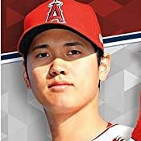
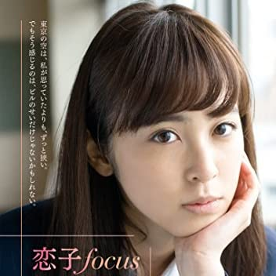
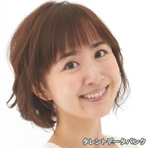

一言
ここのページでは岩手の有名人を紹介したいと思います

投手としても打者としても活躍する「二刀流」の選手として広く知られている。2021年9月、タイム誌による「世界で最も影響力のある100人」 に、「アイコン（象徴）」のカテゴリーでヘンリー王子＆メーガン妃、女優のブリトニー・スピアーズらと共に選出された。

日本のフリーアナウンサー、ファッションモデル、タレント、女優。 インセント所属。 元フジテレビアナウンサー。同年5月26日、退社後初めてフジテレビの番組に出演した『ポップUP!』の生放送の中で、プロバスケットボール選手の渡邊雄太(NBA・ラプターズ所属)との婚約を発表

日本のタレント、女優。所属事務所はアヴィラ。デビュー前の盛岡大学附属高等学校時代には、出身地のIBC岩手放送のテレビ番組『どんちゃんパラダイス』に出演経験がある。一学年次に北豊島高等学校(通信制)に編入し、卒業。